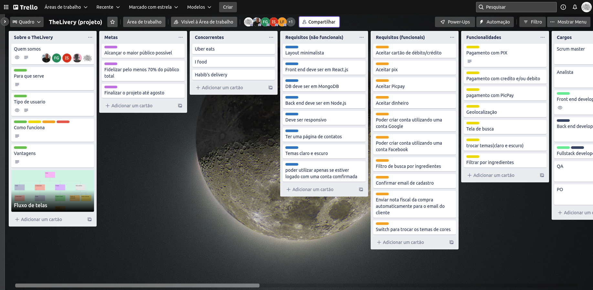
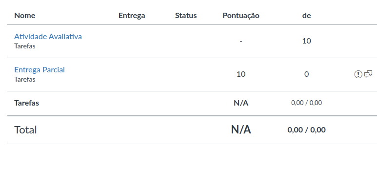
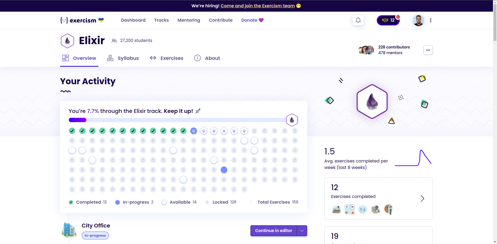

usando o Trello pela primeira vez
Neste trimestre eu tive que criar uma tabela SCRUM no Trello pois era necessário para o trabalho de Sistema Computacionais, e eu acho que ficou bonitinho até.

Nota 10
Ganhei nota 10 no primeiro trabalho dessa matéria. E para não ficar feio no boletim eu acho que o professor deveria me dar um 10 nesse também.

Aprendendo Elixir
Estou estudando Elixir atualmente e costumo fazer alguns exercícios da plataforma Exercism. Eles são ótimos pois também tem uma trilha de aprendizado.